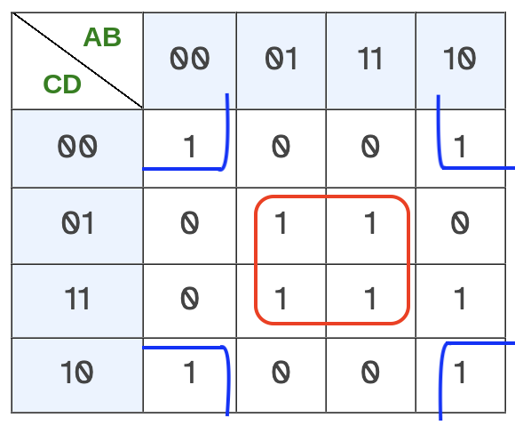
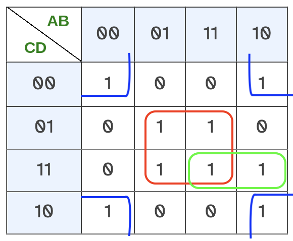
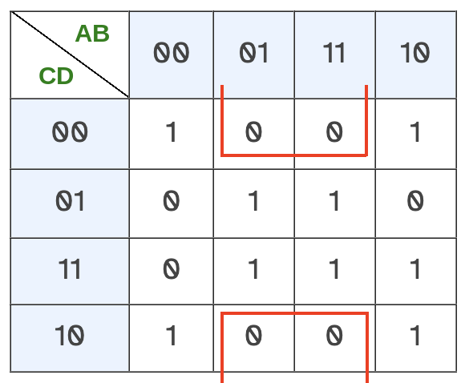
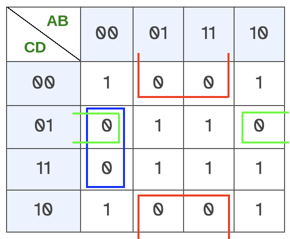
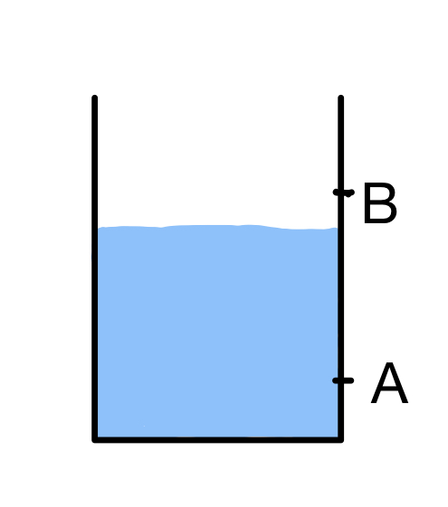
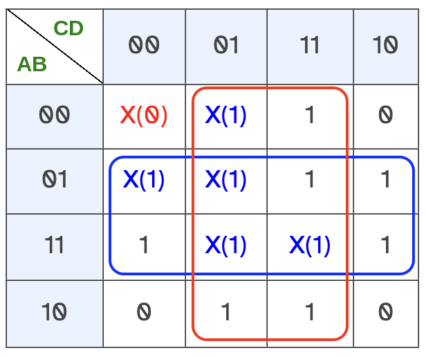

Como ya sabemos, existen múltiples expresiones algebraicas de una función lógica que pueden tener la misma tabla de verdad. Si encontramos la expresión más sencilla de todas ellas, podremos analizar el problema de la manera más simple.
Además, como veremos en el apartado siguiente, las funciones lógicas las implementaremos en el mundo real mediante circuitos electrónicos que funcionarán según la tabla de verdad de la función. Por consiguiente, una función lógica con una expresión algebraica simplificada significará tener circuitos electrónicos más sencillos y, por tanto, más baratos y eficientes.
Al proceso de encontrar la expresión algebraica más simple se le denomina simplificación de la función lógica y veremos dos formas de hacerlo: manipulando directamente la expresión inicial para simplificar aplicando leyes y teoremas del álgebra de Boole o bien usando un método mucho más mecánico utilizando los denominados mapas de Karnaugh.
Método algebraico
Utilizaremos las leyes, propiedades y teoremas del álgebra de Boole para simplificar lo máximo posible.
Por ejemplo, imagina que queremos simplificar la siguiente función:
\[S = \overline{(B+C)\cdot(A\cdot \overline{B}\cdot C)}\]
Para empezar, podríamos aplicar la ley de Morgan del producto para eliminar la negación que afecta a toda la función:
\[\begin{matrix}S = \overline{(B+C)\cdot(A\cdot \overline{B}\cdot C)}=\\=\overline{(B+C)}+\overline{(A\cdot \overline{B}\cdot C)}\end{matrix}\]
A continuación, aplicamos la ley de Morgan de la suma a los dos términos negados que nos han quedado:
\[\overline{(B+C)}=\overline{B}\cdot \overline{C}\]
\[\overline{(A\cdot \overline{B}\cdot C)} = \overline{A}+B+\overline{C}\]
Así, la función valdría ahora lo siguiente:
\[\begin{matrix}S = (\overline{B}\cdot \overline{C})+(\overline{A}+B+\overline{C})=\\=\overline{A}+B+\overline{C}+\overline{B}\cdot \overline{C}\end{matrix}\]
Para finalizar, aplicando la propiedad distributiva del producto, podemos sacar factor común a C y, seguidamente, utilizando la ley de dominación de la suma (1 + B = 1) y el elemento neutro del producto (C · 1 = C) la expresión se simplifica mucho:
\[\begin{matrix}S = \overline{A}+B+\overline{C}+\overline{B}\cdot \overline{C}=\\=\overline{A}+B+\overline{C}\cdot (1+ \overline{B})=\\=\overline{A}+B+\overline{C}\cdot 1=\overline{A}+B+\overline{C}\end{matrix}\]
Este método para simplificar funciones lógicas es muy eficaz pero, en ocasiones, puede ser bastante complejo. Mientras más ejercicios de simplificación hagas con este método, más sencillo te resultará aplicarlo.
Ejercicios de simplificación mediante el método algebraico
Ejercicio 1
Simplificar las siguientes funciones lógicas mediante manipulación algebraica:
\[\begin{matrix}S_{1} = A\cdot B + A\cdot (B+C)+\\+B\cdot (B+C)\end{matrix}\]
\[\begin{matrix}S_{2} = \overline{A}\cdot B\cdot C+A\cdot B\cdot C+\\+ B\cdot \overline{C}\end{matrix}\]
\[S_{3} = \overline{(A+B)\cdot \overline{(A\cdot \overline{B}+C)}}\]
\[S_{4} = \overline{A\cdot (\overline{B}+C)+\overline{B}\cdot \overline{D}+A\cdot (\overline{C}+\overline{D})\cdot \overline{B}}\cdot \overline{(C+B)\cdot A}\]
Ejercicio 2
Escribe la función lógica más simplificada que puedas, que cumpla esta tabla de verdad:
| A | B | C | D | S |
|---|---|---|---|---|
| 0 | 0 | 0 | 0 | 1 |
| 0 | 0 | 0 | 1 | 1 |
| 0 | 0 | 1 | 0 | 1 |
| 0 | 0 | 1 | 1 | 1 |
| 0 | 1 | 0 | 0 | 1 |
| 0 | 1 | 0 | 1 | 1 |
| 0 | 1 | 1 | 0 | 1 |
| 0 | 1 | 1 | 1 | 0 |
| 1 | 0 | 0 | 0 | 0 |
| 1 | 0 | 0 | 1 | 0 |
| 1 | 0 | 1 | 0 | 1 |
| 1 | 0 | 1 | 1 | 1 |
| 1 | 1 | 0 | 0 | 1 |
| 1 | 1 | 0 | 1 | 0 |
| 1 | 1 | 1 | 0 | 1 |
| 1 | 1 | 1 | 1 | 0 |
Método gráfico de Karnaugh
El método de Karnaugh es uno de los métodos más sencillos de simplificación de funciones lógicas. Para su aplicación, debemos partir de la tabla de verdad de la función lógica, la cual reescribiremos en forma de mapa bidimensional, colocando algunas variables en las columnas y otras en las filas del mapa.
Según el número de variables, podríamos tener mapas de Karnaugh de diferentes formas:
Con tres variables:
En horizontal:
| BC A | 00 | 01 | 11 | 10 |
| 0 | ||||
| 1 |
En vertical:
| C AB | 0 | 1 |
| 00 | ||
| 01 | ||
| 11 | ||
| 10 |
Con cuatro variables:
| CD AB | 00 | 01 | 11 | 10 |
| 00 | ||||
| 01 | ||||
| 11 | ||||
| 10 |
Con menos de dos variables no tendría sentido usar este método y con más de cuatro no los vamos a hacer a mano, por lo que nos centraremos en problemas con 3 o 4 variables nada más.
Las consideraciones más importantes a tener en cuenta para dibujar el mapa de Karnaugh son las siguientes:
- Si hay parejas de variables en filas o columnas, los valores posibles pueden ponerse en el orden que se quiera, pero siempre teniendo en cuenta que no pueden cambiar de valor los dos bits a la vez entre columnas/filas contiguas.
- El orden de las variables es indiferente. En el mapa de cuatro variables podríamos haber puesto por filas A con D y por columnas B con C, por ejemplo. Sin embargo, es recomendable ponerlas en el orden en que estén en la tabla de verdad para que sea más fácil trasladar los valores de la tabla al mapa.
- Las casillas del mapa de Karnaugh se rellenarán con los valores de la salida de la tabla de verdad, teniendo cuidado de respetar los valores de las variables de la fila y la columna de cada casilla.
Simplificación en el mapa de Karnaugh
Hay dos formas de aplicar el método de Karnaugh: para obtener la función como suma de productos lógicos o para obtener la función como productos de sumas lógicas. Sería como hacerlo al estilo de la primera forma canónica o al estilo de la segunda. Si sabes aplicar uno de los métodos, el otro es exactamente igual pero de manera dual (cambiando "1" por "0", sumas por productos y productos por sumas)
Vamos a explicar cómo aplicar el método de Karnaugh ayudándonos de un ejemplo:
Ejemplo resuelto
Ejercicio de ejemplo: simplificar la siguiente función lógica mediante el método de Karnaugh:
S = A·B·C·D + A·B·C·D + A·B·C·D + A·B·C·D + A·B·C·D + A·B·C·D + A·B·C·D + A·B·C·D + A·B·C·D
Lo primero que tenemos que hacer es escribir la tabla de verdad de esta función, ya que el método de Karnaugh necesita partir de la tabla de verdad. Como la función nos la han dado en forma de primera forma canónica, escribir la tabla de verdad es muy sencillo (solo hay que poner los "1" en las filas correspondientes a cada minitérmino):
| A | B | C | D | S |
|---|---|---|---|---|
| 0 | 0 | 0 | 0 | 1 |
| 0 | 0 | 0 | 1 | 0 |
| 0 | 0 | 1 | 0 | 1 |
| 0 | 0 | 1 | 1 | 0 |
| 0 | 1 | 0 | 0 | 0 |
| 0 | 1 | 0 | 1 | 1 |
| 0 | 1 | 1 | 0 | 0 |
| 0 | 1 | 1 | 1 | 1 |
| 1 | 0 | 0 | 0 | 1 |
| 1 | 0 | 0 | 1 | 0 |
| 1 | 0 | 1 | 0 | 1 |
| 1 | 0 | 1 | 1 | 1 |
| 1 | 1 | 0 | 0 | 0 |
| 1 | 1 | 0 | 1 | 1 |
| 1 | 1 | 1 | 0 | 0 |
| 1 | 1 | 1 | 1 | 1 |
Una vez rellena la tabla de verdad, ya podemos dibujar el mapa de Karnaugh y escribir en sus casillas los valores de la salida de la función S:
| AB CD | 00 | 01 | 11 | 10 |
| 00 | 1 | 0 | 0 | 1 |
| 01 | 0 | 1 | 1 | 0 |
| 11 | 0 | 1 | 1 | 1 |
| 10 | 1 | 0 | 0 | 1 |
Fíjate que ahora hemos puesto A y B en las columnas y C y D en las filas, al revés del ejemplo que viste al principio de la página. Así puedes comprobar que el orden de las variables no importa.
A partir de este momento, iniciamos el proceso de simplificación propiamente dicho. Como ahora el método es distinto si vamos a buscar sumas de productos o productos de sumas, vamos a ver las dos formas de hacerlo:
Para obtener sumas de productos lógicos
Buscamos en el mapa de Karnaugh grupos de unos (1) contiguos lo más grandes posibles, con las siguiente consideraciones:
- Los grupos deben estar compuestos por una cantidad de unos que sea potencia de 2. Es decir, podemos encontrar grupos de 1, 2, 4, 8, etc., pero nunca de 6 o de 10 por ejemplo.
- Los unos se consideran contiguos si están en celdas unidas en vertical o en horizontal, nunca en diagonal. Por lo tanto, los grupos siempre tienen que tener forma rectangular. No puede haber grupos con forma de "L", ni en diagonal.
- Cada "uno" puede pertenecer a uno o a varios grupos a la vez.
- Las casillas de la fila superior se consideran contiguas a las de la fila inferior.
- Las casillas de la primera columna de la izquierda se consideran contiguas a las de la última, a la derecha del todo.
- Hay que tomar la cantidad mínima posible de grupos y que sean lo más grande posibles.
Con todas estas consideraciones, comenzamos a agrupar unos en nuestro mapa:
- Como tenemos 4 variables, el grupo más numeroso posible sería de 24 = 16 unos, algo que obviamente nunca va a pasar.
- El siguiente grupo más numeroso sería de 23 = 8 unos. En este caso vemos que no hay ninguno.
- A continuación, buscamos grupos de 4 elementos y, en este caso, sí que encontramos dos grupos de 4. Uno está en las casillas centrales del mapa, señalado en rojo, y otro se forma por los unos de las esquinas, señalado en azul (se cumplen las consideraciones números 4 y 5 de los grupos).

- Por último, como aún nos queda un uno sin agrupar, tenemos que buscar grupos de 2 elementos que lo contengan y, efectivamente, hay uno, señalado aquí en verde (podíamos haber agrupado el uno con el que tiene debajo o con el de su izquierda, que es el que hemos tomado. Aunque el resultado será una función diferente, estará igual de simplificada):

Como ya hemos agrupado todos los unos, ya hemos terminado esta fase. Ahora solo queda asignar a cada uno de los grupos una expresión algebraica, siguiendo un método análogo al de la primera forma canónica.
Estudiamos el valor de las variables dentro de cada grupo y escribimos un producto de variables para cada grupo, siguiendo estas reglas:
- Si la variable solo puede valer cero, se pone negada.
- Si la variable solo puede valer uno, se pone sin negar.
- Si la variable puede valer tanto cero como uno, no se incluye en la expresión.
Analizando cada uno de los grupos, en este caso razonaríamos así:
Grupo rojo
- A puede valer cero o uno: no se pone
- B siempre vale uno: se pone tal cual
- C puede valer cero o uno: no se pone
- D siempre vale uno: se pone tal cual
Por lo tanto, la expresión de este grupo será B·D
Grupo azul
- A puede valer cero o uno: no se pone
- B siempre vale cero: se pone negada
- C puede valer cero o uno: no se pone
- D siempre vale cero: se pone negada
Por lo tanto, la expresión de este grupo será B·D
Grupo verde
- A siempre vale uno: se pone tal cual
- B puede valer cero o uno: no se pone
- C siempre vale uno: se pone tal cual
- D siempre vale uno: se pone tal cual
Por lo tanto, la expresión de este grupo será A·C·D
Lo único que nos falta ya es sumar las expresiones de cada grupo y ya tenemos la expresión de la función lógica simplificada:
S = B·D + B·D + A·C·D
Para obtener productos de sumas lógicas
Buscamos en el mapa de Karnaugh grupos de ceros (0) contiguos lo más grandes posibles, con las siguiente consideraciones:
- Los grupos deben estar compuestos por una cantidad de ceros que sea potencia de 2. Es decir, podemos encontrar grupos de 1, 2, 4, 8, etc., pero nunca de 6 o de 10 por ejemplo.
- Los ceros se consideran contiguos si están en celdas unidas en vertical o en horizontal, nunca en diagonal. Por lo tanto, los grupos siempre tienen que tener forma rectangular. No puede haber grupos con forma de "L", ni en diagonal.
- Cada "cero" puede pertenecer a uno o a varios grupos a la vez.
- Las casillas de la fila superior se consideran contiguas a las de la fila inferior.
- Las casillas de la primera columna de la izquierda se consideran contiguas a las de la última, a la derecha del todo.
- Hay que tomar la cantidad mínima posible de grupos y que sean lo más grande posibles.
Con todas estas consideraciones, comenzamos a agrupar ceros en nuestro mapa:
- Como tenemos 4 variables, el grupo más numeroso posible sería de 24 = 16 ceros, algo que obviamente nunca va a pasar.
- El siguiente grupo más numeroso sería de 23 = 8 ceros. En este caso vemos que no hay ninguno.
- El siguiente grupo más numeroso sería de 22 = 4 ceros. Hay un grupo que cumple la consideración 4 y que se indica marcado en rojo:

- A continuación, buscamos grupos de 2 elementos y, en este caso, encontramos dos grupos de 2. Uno de ellos se identifican directamente (marcado en azul) y el otro (marcado en verde) está entre la primera y la última columna (la consideración número 5 para hacer grupos):

Como ya hemos agrupado todos los ceros, ya hemos terminado esta fase. Ahora solo queda asignar a cada uno de los grupos una expresión algebraica, siguiendo un método análogo al de la segunda forma canónica.
Estudiamos el valor de las variables dentro de cada grupo y escribimos una suma de variables para cada grupo, siguiendo estas reglas:
- Si la variable solo puede valer cero, se pone sin negar.
- Si la variable solo puede valer uno, se pone negada.
- Si la variable puede valer tanto cero como uno, no se incluye en la expresión.
Analizando cada uno de los grupos, en este caso razonaríamos así:
Grupo rojo
- A puede valer cero o uno: no se pone
- B siempre vale uno: se pone negado
- C puede valer cero o uno: no se pone
- D siempre vale cero: se pone tal cual
Por lo tanto, la expresión de este grupo será B+D
Grupo azul
- A siempre vale cero: se pone tal cual
- B siempre vale cero: se pone tal cual
- C puede valer cero o uno: no se pone
- D siempre vale uno: se pone negado
Por lo tanto, la expresión de este grupo será A+B+D
Grupo verde
- A puede valer cero o uno: no se pone
- B siempre vale cero: se pone tal cual
- C siempre vale cero: se pone tal cual
- D siempre vale uno: se pone negado
Por lo tanto, la expresión de este grupo será: B+C+D
Lo único que nos falta ya es multiplicar las expresiones de cada grupo y ya tenemos la expresión de la función lógica simplificada:
S = (B+D)·(A+B+D)·(B+C+D)
Como ves, por cualquiera de los dos métodos obtenemos una función simplificada. No es necesario aplicar los dos métodos, se elegirá el que nos resulte más sencillo, aunque normalmente siempre se utiliza el primer método si no se dice lo contrario por ser quizás algo más intuitivo.
Ejercicios simplificación mediante mapas de Karnaugh
Ejercicio 1
Dada la siguiente función lógica:
\[\begin{matrix}S_{2} = \overline{A}\cdot B\cdot C+A\cdot B\cdot C+\\+ B\cdot \overline{C}\end{matrix}\]
a) Manipularla algebraicamente para ponerla en primera forma canónica
b) Escribir su tabla de verdad
c) Obtener la función simplificada aplicando el método de Karnaugh
Ejercicio 2
Dada la siguiente tabla de verdad:
| A | B | C | D | S |
|---|---|---|---|---|
| 0 | 0 | 0 | 0 | 1 |
| 0 | 0 | 0 | 1 | 1 |
| 0 | 0 | 1 | 0 | 1 |
| 0 | 0 | 1 | 1 | 0 |
| 0 | 1 | 0 | 0 | 0 |
| 0 | 1 | 0 | 1 | 0 |
| 0 | 1 | 1 | 0 | 0 |
| 0 | 1 | 1 | 1 | 0 |
| 1 | 0 | 0 | 0 | 1 |
| 1 | 0 | 0 | 1 | 1 |
| 1 | 0 | 1 | 0 | 1 |
| 1 | 0 | 1 | 1 | 0 |
| 1 | 1 | 0 | 0 | 1 |
| 1 | 1 | 0 | 1 | 1 |
| 1 | 1 | 1 | 0 | 0 |
| 1 | 1 | 1 | 1 | 0 |
a) Escribir la primera y segunda forma canónica de la función lógica correspondiente
b) Obtener la función lógica simplificada mediante el método de Karnaugh
Simplificación con estados imposibles
En ocasiones, tendremos algunos estados que serán imposibles. Es decir, que no se podrán dar en el mundo real. Imagina, por ejemplo, que tienes dos sensores de humedad en un depósito, que generan un "1" si detectan humedad y un "0" si no la detectan. Si los sensores A y B están colocados de esta forma en el depósito:

Será imposible que el sensor B detecte humedad y el sensor A no la detecte. Como nunca se dará esa combinación de entradas, nos da igual si la salida de nuestro circuito de control es un 0 o un 1. Esto podemos utilizarlo a nuestro favor para hacer circuitos más simplificados.Lo que haremos será indicar la salida de estos estados imposibles como una "X" en la tabla de verdad. Cuando dibujemos el mapa de Karnaugh y vayamos buscando grupos, decidiremos entonces si cada X es un 0 o un 1. En caso de que estemos aplicando el método de Karnaugh en la primera forma (suma de productos), podemos tener dos escenarios:
- Si una "X" está rodeada por "1", podemos considerarla como un "1" y esto nos permitirá completar grupos más grandes (que generan expresiones más simples)
- Si una "X" está rodeada por "0", podemos considerarla como un "0" y así no tendremos que gastar un grupo más para rodearla, con lo que tendremos un producto menos en la expresión final.
Análogamente podemos asignar los valores si hacemos el método de Karnaugh buscando productos de sumas. Sea como sea, los estados imposibles permiten siempre simplificar mucho la función lógica si se asignan cuidadosamente los valores.
Es importante que estemos muy seguros de que nunca se va a dar un estado para considerarlo imposible. Si puede ocurrir, por ejemplo, que se de un error en las lecturas y se pueda dar ese estado, entonces tendremos que decidir si generar un 1 o un 0 en ese caso y no dejarlo al "azar" diseñando con una "X".
Ejemplo resuelto
Simplificar mediante el método de Karnaugh la función lógica cuya tabla de verdad se incluye:
| A | B | C | D | S |
|---|---|---|---|---|
| 0 | 0 | 0 | 0 | X |
| 0 | 0 | 0 | 1 | X |
| 0 | 0 | 1 | 0 | 0 |
| 0 | 0 | 1 | 1 | 1 |
| 0 | 1 | 0 | 0 | X |
| 0 | 1 | 0 | 1 | X |
| 0 | 1 | 1 | 0 | 1 |
| 0 | 1 | 1 | 1 | 1 |
| 1 | 0 | 0 | 0 | 0 |
| 1 | 0 | 0 | 1 | 1 |
| 1 | 0 | 1 | 0 | 0 |
| 1 | 0 | 1 | 1 | 1 |
| 1 | 1 | 0 | 0 | 1 |
| 1 | 1 | 0 | 1 | X |
| 1 | 1 | 1 | 0 | 1 |
| 1 | 1 | 1 | 1 | X |
Solución
Dibujamos el mapa de Karnaugh a partir de la tabla:
| CD AB | 00 | 01 | 11 | 10 |
| 00 | X | X | 1 | 0 |
| 01 | X | X | 1 | 1 |
| 11 | 1 | X | X | 1 |
| 10 | 0 | 1 | 1 | 0 |
Aplicando Karnaugh para buscar sumas de productos
Elegimos los valores necesarios de las X para poder hacer los grupos más grandes posible. En este caso, podemos conseguir dos grupos de 8 unos cada uno, y nos quedaría una X que podemos tomar como cero para no gastar ningún grupo más:
| CD AB | 00 | 01 | 11 | 10 |
| 00 | X(0) | X(1) | 1 | 0 |
| 01 | X(1) | X(1) | 1 | 1 |
| 11 | 1 | X(1) | X(1) | 1 |
| 10 | 0 | 1 | 1 | 0 |
Los grupos serán:

Y, por lo tanto, la función queda muy simplificada:S = B + D